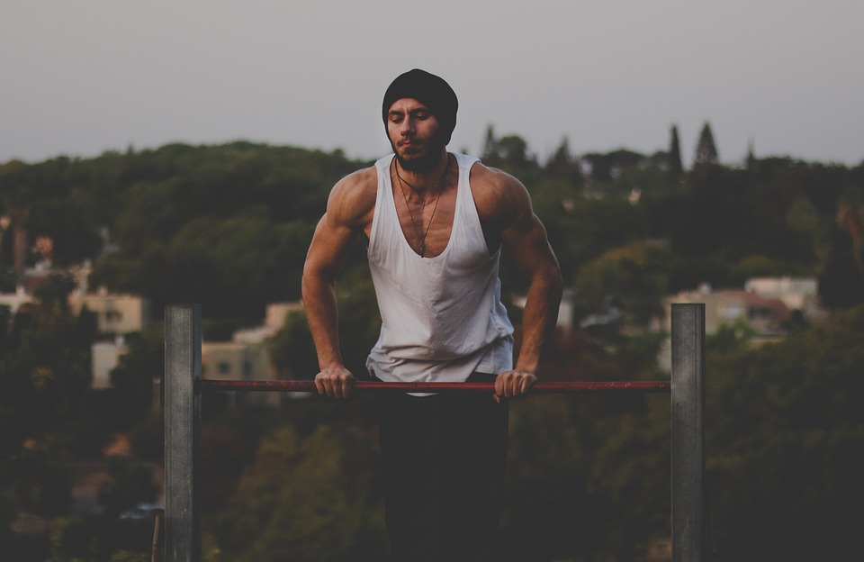
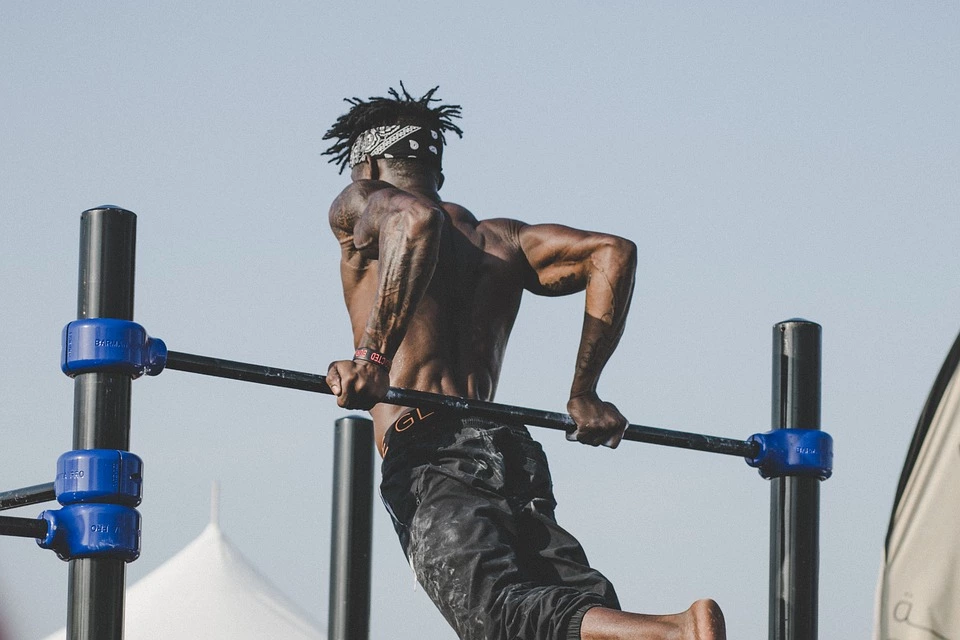
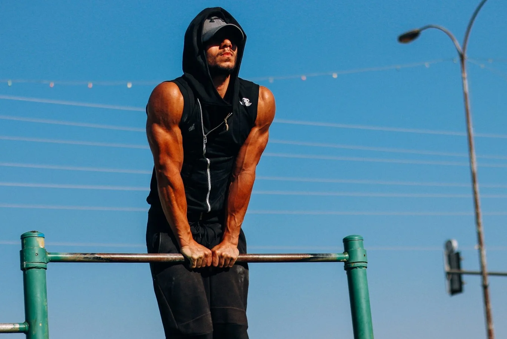
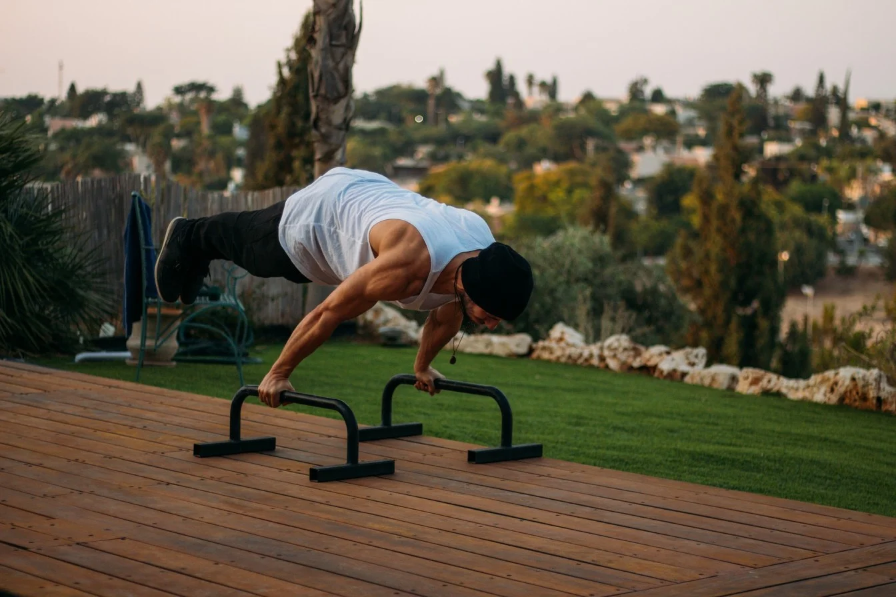
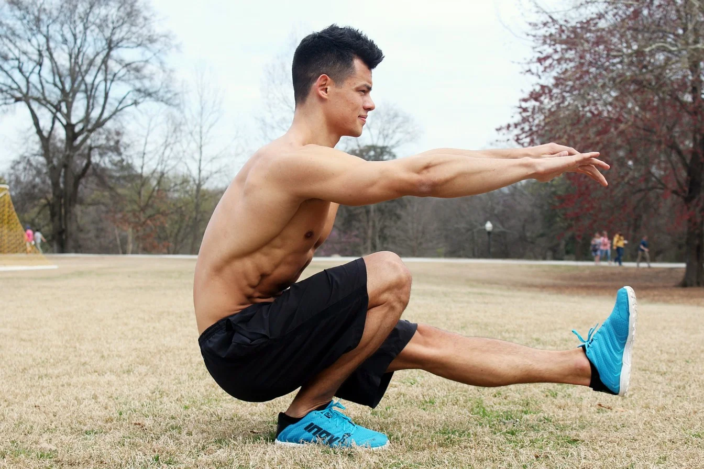
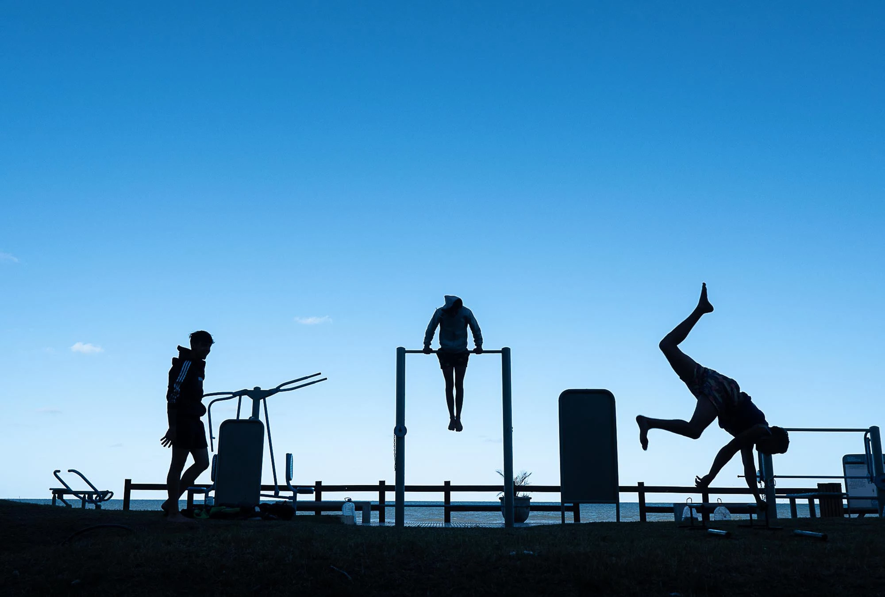
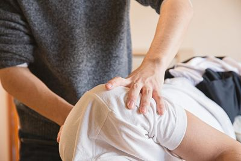
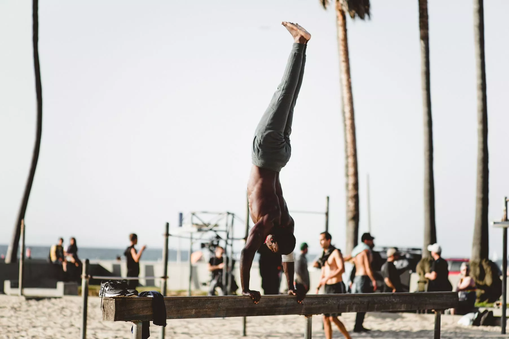
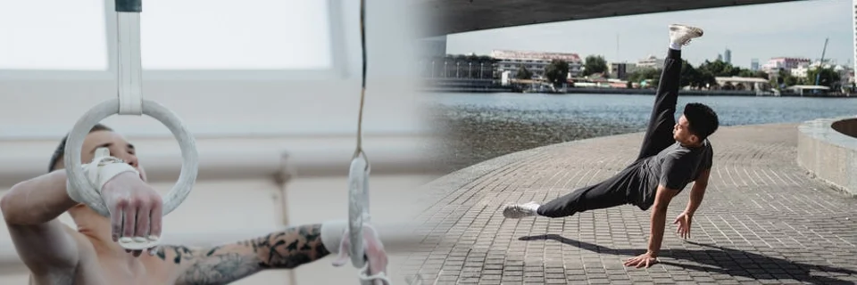

Descubre la calistenia
Entrenamiento con tu propio peso corporal. Desarrolla fuerza, mejora tu salud y consigue objetivos deportivos.
DescubrirMás en profundidad
Ya sea para aumentar tu fuerza, resistencia o hipertrofia muscular, practicar un deporte es una excelente idea. Este en particular se caracteriza por ejercicios multiarticulares con el objetivo de lograr controlar tu peso corporal (sin necesidad de mucho equipamento). Hay muchas maneras de enfocar el entrenamiento y las ramas más marcadas son: básicos, estáticos, dinámicos y peso lastrado.
Entrenamiento

Maneras más comunes
de entrenar

Básicos
Son los ejercicios base de la disciplina. Es escencial dominarlos para fortalecer los grandes grupos musculares, los ligamentos y los tendones. De esta manera luego poder realizar ejercicios más avanzados y evitar lesiones. Dentro de estos básicos están incluídas las dominadas, flexiones de brazos, sentadillas y fondos. Entrena!

Estáticos
Ejercicios que requieren mucha fuerza muscular y en tendones, por lo que se necesita un poco más de tiempo para dominarlos. Se trabaja la contracción isométrica con el objetivo de evitar un movimiento en vez de generarlo. Ejerciendo resistencia en una determinada postura. Ejemplos: Front Lever, Full Planche, Human Flag, etc. Entrena!

¿Y las piernas?
Al entrenar con nuestro propio peso, hay un sin fin de ejercicios que podemos realizar para trabajar el tren inferior. Ya sea en rangos de fuerza, hipertrofia o resistencia. Aunque para que estas variaciones sean efectivas debemos jugar un poco con las intensidades (tiempo en tensión, acortar descansos, aumentar la dificultad de los ejercicios, etc). Entrena!Contexto y
algunos consejos

Desde lo social
Al no depender de mucho equipo para realizar los ejercicios, un parque se convierte en un espacio para hacer actividad física de manera gratuita, y compartir con otras personas. En muchos casos los jóvenes terminan generando afinidad con la disciplina y formando hábitos más saludables para progresar en el deporte. Dejando de lado otras actividades callejeras más perjudiciales. Entrena!

Prevención de lesiones
Como en otros deportes, al entrenar calistenia en un alto nivel, el riesgo de sufrir lesiones es elevado. Puede ocurrir por el desgaste de las articulaciones al repetir muchas veces un elemento, por una caída, sobreentrenamiento, etc. Lo ideal es dedicar tiempo a entrenar la movilidad y flexibilidad, además de acudir a profesionales (fisio), ya sea para recuperar, prevenir o mantener. Entrena!

Domina el handstand
Quizas sencillo a la vista para algunos, pero se necesita de fuerza, propiocepción, equilibrio, coordinación, movilidad y técnica para realmente obtenerlo. A su vez, es una muy buena práctica enfocarse en dominarlo desde el principio, para poder desbloquear un nuevo nivel de ejercicios de empuje. Y uno de los ejercicios más efectivos para los hombros: handstand push ups. Entrena!Otros deportes
La calistenia genera una gran base de fuerza y resistencia, además de mejorar la flexibilidad y postura corporal. Esto te puede beneficiar a la hora de practicar otros deportes. No te limites.
